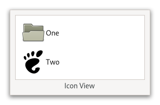

Gtk.IconView¶
Example¶
- Subclasses:
None
Methods¶
- Inherited:
Gtk.Widget (181), GObject.Object (37), Gtk.Accessible (15), Gtk.Buildable (1), Gtk.CellLayout (9), Gtk.Scrollable (9)
- Structs:
Virtual Methods¶
Properties¶
- Inherited:
Name |
Type |
Flags |
Short Description |
|---|---|---|---|
r/w/en |
|||
r/w/co |
|||
r/w/en |
|||
r/w/en |
|||
r/w/en |
|||
r/w/en |
|||
r/w/en |
|||
r/w/en |
|||
r/w/en |
|||
r/w |
|||
r/w/en |
|||
r/w/en |
|||
r/w/en |
|||
r/w/en |
|||
r/w/en |
|||
r/w/en |
|||
r/w/en |
Signals¶
- Inherited:
Name |
Short Description |
|---|---|
A ‘keybinding signal [class@Gtk.SignalAction]’ which gets emitted when the user activates the currently focused item. |
|
The |
|
The |
|
A ‘keybinding signal [class@Gtk.SignalAction]’ which gets emitted when the user selects all items. |
|
A ‘keybinding signal [class@Gtk.SignalAction]’ which gets emitted when the user selects the item that is currently focused. |
|
The |
|
A ‘keybinding signal [class@Gtk.SignalAction]’ which gets emitted when the user toggles whether the currently focused item is selected or not. |
|
A ‘keybinding signal [class@Gtk.SignalAction]’ which gets emitted when the user unselects all items. |
Fields¶
- Inherited:
Class Details¶
- class Gtk.IconView(**kwargs)¶
- Bases:
- Abstract:
No
GtkIconViewis a widget which displays data in a grid of icons.GtkIconViewprovides an alternative view on aGtkTreeModel. It displays the model as a grid of icons with labels. Like [class`Gtk`.TreeView], it allows to select one or multiple items (depending on the selection mode, see [method`Gtk`.IconView.set_selection_mode]). In addition to selection with the arrow keys,GtkIconViewsupports rubberband selection, which is controlled by dragging the pointer.Note that if the tree model is backed by an actual tree store (as opposed to a flat list where the mapping to icons is obvious),
GtkIconViewwill only display the first level of the tree and ignore the tree’s branches.- CSS nodes
`` iconview.view ╰── [rubberband] ``
GtkIconViewhas a single CSS node with name iconview and style class .view. For rubberband selection, a subnode with name rubberband is used.Deprecated since version 4.10: Use [class`Gtk`.GridView] instead
- classmethod new()[source]¶
- Returns:
A newly created
GtkIconViewwidget- Return type:
Creates a new
GtkIconViewwidgetDeprecated since version 4.10: Use [class`Gtk`.GridView] instead
- classmethod new_with_area(area)[source]¶
- Parameters:
area (
Gtk.CellArea) – theGtkCellAreato use to layout cells- Returns:
A newly created
GtkIconViewwidget- Return type:
Creates a new
GtkIconViewwidget using the specified area to layout cells inside the icons.Deprecated since version 4.10: Use [class`Gtk`.GridView] instead
- classmethod new_with_model(model)[source]¶
- Parameters:
model (
Gtk.TreeModel) – The model.- Returns:
A newly created
GtkIconViewwidget.- Return type:
Creates a new
GtkIconViewwidget with the model model.Deprecated since version 4.10: Use [class`Gtk`.GridView] instead
- create_drag_icon(path)[source]¶
- Parameters:
path (
Gtk.TreePath) – aGtkTreePathin self- Returns:
a newly-allocated
GdkPaintableof the drag icon.- Return type:
Creates a
GdkPaintablerepresentation of the item at path. This image is used for a drag icon.Deprecated since version 4.10: Use [class`Gtk`.GridView] instead
- enable_model_drag_dest(formats, actions)[source]¶
- Parameters:
formats (
Gdk.ContentFormats) – the formats that the drag will supportactions (
Gdk.DragAction) – the bitmask of possible actions for a drag to this widget
Turns self into a drop destination for automatic DND. Calling this method sets
GtkIconView:reorderabletoFalse.Deprecated since version 4.10: Use [class`Gtk`.GridView] instead
- enable_model_drag_source(start_button_mask, formats, actions)[source]¶
- Parameters:
start_button_mask (
Gdk.ModifierType) – Mask of allowed buttons to start dragformats (
Gdk.ContentFormats) – the formats that the drag will supportactions (
Gdk.DragAction) – the bitmask of possible actions for a drag from this widget
Turns self into a drag source for automatic DND. Calling this method sets
GtkIconView:reorderabletoFalse.Deprecated since version 4.10: Use [class`Gtk`.GridView] instead
- get_activate_on_single_click()[source]¶
-
Gets the setting set by
Gtk.IconView.set_activate_on_single_click().Deprecated since version 4.10: Use [class`Gtk`.GridView] instead
- get_cell_rect(path, cell)[source]¶
- Parameters:
path (
Gtk.TreePath) – aGtkTreePathcell (
Gtk.CellRendererorNone) – aGtkCellRenderer
- Returns:
Falseif there is no such item,Trueotherwise- rect:
rectangle to fill with cell rect
- Return type:
(
bool, rect:Gdk.Rectangle)
Fills the bounding rectangle in widget coordinates for the cell specified by path and cell. If cell is
Nonethe main cell area is used.This function is only valid if self is realized.
Deprecated since version 4.10: Use [class`Gtk`.GridView] instead
- get_column_spacing()[source]¶
- Returns:
the space between columns
- Return type:
Returns the value of the
::column-spacingproperty.Deprecated since version 4.10: Use [class`Gtk`.GridView] instead
- get_columns()[source]¶
- Returns:
the number of columns, or -1
- Return type:
Returns the value of the
::columnsproperty.Deprecated since version 4.10: Use [class`Gtk`.GridView] instead
- get_cursor()[source]¶
- Returns:
Trueif the cursor is set.- path:
Return location for the current cursor path
- cell:
Return location the current focus cell
- Return type:
(
bool, path:Gtk.TreePath, cell:Gtk.CellRenderer)
Fills in path and cell with the current cursor path and cell. If the cursor isn’t currently set, then path will be
None. If no cell currently has focus, then cell will beNone.The returned
GtkTreePathmust be freed withGtk.TreePath.free().Deprecated since version 4.10: Use [class`Gtk`.GridView] instead
- get_dest_item_at_pos(drag_x, drag_y)[source]¶
- Parameters:
- Returns:
If there is no item at the given position return
Noneotherwise a tuple containing:- path:
The path of the item
- pos:
The drop position
- Return type:
(path:
Gtk.TreePath, pos:Gtk.IconViewDropPosition) orNone
Determines the destination item for a given position.
Deprecated since version 4.10: Use [class`Gtk`.GridView] instead
- get_drag_dest_item()[source]¶
- Returns:
- path:
Return location for the path of the highlighted item
- pos:
Return location for the drop position
- Return type:
(path:
Gtk.TreePathorNone, pos:Gtk.IconViewDropPosition)
Gets information about the item that is highlighted for feedback.
Deprecated since version 4.10: Use [class`Gtk`.GridView] instead
- get_item_at_pos(x, y)[source]¶
- Parameters:
- Returns:
If not item exists at the specified position returns
None, otherwise a tuple containing:- path:
The path
- cell:
The renderer responsible for the cell at (x, y)
- Return type:
(path:
Gtk.TreePath, cell:Gtk.CellRenderer) orNone
Gets the path and cell for the icon at the given position.
Deprecated since version 4.10: Use [class`Gtk`.GridView] instead
- get_item_column(path)[source]¶
- Parameters:
path (
Gtk.TreePath) – theGtkTreePathof the item- Returns:
The column in which the item is displayed
- Return type:
Gets the column in which the item path is currently displayed. Column numbers start at 0.
Deprecated since version 4.10: Use [class`Gtk`.GridView] instead
- get_item_orientation()[source]¶
- Returns:
the relative position of texts and icons
- Return type:
Returns the value of the
::item-orientationproperty which determines whether the labels are drawn beside the icons instead of below.Deprecated since version 4.10: Use [class`Gtk`.GridView] instead
- get_item_padding()[source]¶
- Returns:
the padding around items
- Return type:
Returns the value of the
::item-paddingproperty.Deprecated since version 4.10: Use [class`Gtk`.GridView] instead
- get_item_row(path)[source]¶
- Parameters:
path (
Gtk.TreePath) – theGtkTreePathof the item- Returns:
The row in which the item is displayed
- Return type:
Gets the row in which the item path is currently displayed. Row numbers start at 0.
Deprecated since version 4.10: Use [class`Gtk`.GridView] instead
- get_item_width()[source]¶
- Returns:
the width of a single item, or -1
- Return type:
Returns the value of the
::item-widthproperty.Deprecated since version 4.10: Use [class`Gtk`.GridView] instead
- get_margin()[source]¶
- Returns:
the space at the borders
- Return type:
Returns the value of the
::marginproperty.Deprecated since version 4.10: Use [class`Gtk`.GridView] instead
- get_markup_column()[source]¶
- Returns:
the markup column, or -1 if it’s unset.
- Return type:
Returns the column with markup text for self.
Deprecated since version 4.10: Use [class`Gtk`.GridView] instead
- get_model()[source]¶
- Returns:
The currently used
GtkTreeModel- Return type:
Returns the model the
GtkIconViewis based on. ReturnsNoneif the model is unset.Deprecated since version 4.10: Use [class`Gtk`.GridView] instead
- get_path_at_pos(x, y)[source]¶
- Parameters:
- Returns:
The
GtkTreePathcorresponding to the icon orNoneif no icon exists at that position.- Return type:
Gtk.TreePathorNone
Gets the path for the icon at the given position.
Deprecated since version 4.10: Use [class`Gtk`.GridView] instead
- get_pixbuf_column()[source]¶
- Returns:
the pixbuf column, or -1 if it’s unset.
- Return type:
Returns the column with pixbufs for self.
Deprecated since version 4.10: Use [class`Gtk`.GridView] instead
- get_reorderable()[source]¶
-
Retrieves whether the user can reorder the list via drag-and-drop. See
Gtk.IconView.set_reorderable().Deprecated since version 4.10: Use [class`Gtk`.GridView] instead
- get_row_spacing()[source]¶
- Returns:
the space between rows
- Return type:
Returns the value of the
::row-spacingproperty.Deprecated since version 4.10: Use [class`Gtk`.GridView] instead
- get_selected_items()[source]¶
- Returns:
A
GListcontaining aGtkTreePathfor each selected row.- Return type:
Creates a list of paths of all selected items. Additionally, if you are planning on modifying the model after calling this function, you may want to convert the returned list into a list of
GtkTreeRowReferences. To do this, you can useGtk.TreeRowReference.new().To free the return value, use
g_list_free_full:GtkWidget *icon_view = gtk_icon_view_new (); // Use icon_view GList *list = gtk_icon_view_get_selected_items (GTK_ICON_VIEW (icon_view)); // use list g_list_free_full (list, (GDestroyNotify) gtk_tree_path_free);
Deprecated since version 4.10: Use [class`Gtk`.GridView] instead
- get_selection_mode()[source]¶
- Returns:
the current selection mode
- Return type:
Gets the selection mode of the self.
Deprecated since version 4.10: Use [class`Gtk`.GridView] instead
- get_spacing()[source]¶
- Returns:
the space between cells
- Return type:
Returns the value of the
::spacingproperty.Deprecated since version 4.10: Use [class`Gtk`.GridView] instead
- get_text_column()[source]¶
- Returns:
the text column, or -1 if it’s unset.
- Return type:
Returns the column with text for self.
Deprecated since version 4.10: Use [class`Gtk`.GridView] instead
- get_tooltip_column()[source]¶
- Returns:
the index of the tooltip column that is currently being used, or -1 if this is disabled.
- Return type:
Returns the column of self’s model which is being used for displaying tooltips on self’s rows.
Deprecated since version 4.10: Use [class`Gtk`.GridView] instead
- get_tooltip_context(x, y, keyboard_tip)[source]¶
- Parameters:
- Returns:
whether or not the given tooltip context points to an item
- model:
a pointer to receive a
GtkTreeModel- path:
a pointer to receive a
GtkTreePath- iter:
a pointer to receive a
GtkTreeIter
- Return type:
(
bool, model:Gtk.TreeModel, path:Gtk.TreePath, iter:Gtk.TreeIter)
This function is supposed to be used in a
GtkWidget::query-tooltipsignal handler forGtkIconView. The x, y and keyboard_tip values which are received in the signal handler, should be passed to this function without modification.The return value indicates whether there is an icon view item at the given coordinates (
True) or not (False) for mouse tooltips. For keyboard tooltips the item returned will be the cursor item. WhenTrue, then any of model, path and iter which have been provided will be set to point to that row and the corresponding model.Deprecated since version 4.10: Use [class`Gtk`.GridView] instead
- get_visible_range()[source]¶
- Returns:
Returns
Noneif there is no visible range or a tuple containing:- start_path:
Start of region
- end_path:
End of region
- Return type:
(start_path:
Gtk.TreePath, end_path:Gtk.TreePath) orNone
Sets start_path and end_path to be the first and last visible path. Note that there may be invisible paths in between.
Both paths should be freed with
Gtk.TreePath.free() after use.Deprecated since version 4.10: Use [class`Gtk`.GridView] instead
- item_activated(path)[source]¶
- Parameters:
path (
Gtk.TreePath) – TheGtkTreePathto be activated
Activates the item determined by path.
Deprecated since version 4.10: Use [class`Gtk`.GridView] instead
- path_is_selected(path)[source]¶
- Parameters:
path (
Gtk.TreePath) – AGtkTreePathto check selection on.- Returns:
Trueif path is selected.- Return type:
Returns
Trueif the icon pointed to by path is currently selected. If path does not point to a valid location,Falseis returned.Deprecated since version 4.10: Use [class`Gtk`.GridView] instead
- scroll_to_path(path, use_align, row_align, col_align)[source]¶
- Parameters:
path (
Gtk.TreePath) – The path of the item to move to.use_align (
bool) – whether to use alignment arguments, orFalse.row_align (
float) – The vertical alignment of the item specified by path.col_align (
float) – The horizontal alignment of the item specified by path.
Moves the alignments of self to the position specified by path. row_align determines where the row is placed, and col_align determines where column is placed. Both are expected to be between 0.0 and 1.0. 0.0 means left/top alignment, 1.0 means right/bottom alignment, 0.5 means center.
If use_align is
False, then the alignment arguments are ignored, and the tree does the minimum amount of work to scroll the item onto the screen. This means that the item will be scrolled to the edge closest to its current position. If the item is currently visible on the screen, nothing is done.This function only works if the model is set, and path is a valid row on the model. If the model changes before the self is realized, the centered path will be modified to reflect this change.
Deprecated since version 4.10: Use [class`Gtk`.GridView] instead
- select_all()[source]¶
Selects all the icons. self must has its selection mode set to
Gtk.SelectionMode.MULTIPLE.Deprecated since version 4.10: Use [class`Gtk`.GridView] instead
- select_path(path)[source]¶
- Parameters:
path (
Gtk.TreePath) – TheGtkTreePathto be selected.
Selects the row at path.
Deprecated since version 4.10: Use [class`Gtk`.GridView] instead
- selected_foreach(func, *data)[source]¶
- Parameters:
func (
Gtk.IconViewForeachFunc) – The function to call for each selected icon.
Calls a function for each selected icon. Note that the model or selection cannot be modified from within this function.
Deprecated since version 4.10: Use [class`Gtk`.GridView] instead
- set_activate_on_single_click(single)[source]¶
-
Causes the
GtkIconView::item-activatedsignal to be emitted on a single click instead of a double click.Deprecated since version 4.10: Use [class`Gtk`.GridView] instead
- set_column_spacing(column_spacing)[source]¶
- Parameters:
column_spacing (
int) – the column spacing
Sets the
::column-spacingproperty which specifies the space which is inserted between the columns of the icon view.Deprecated since version 4.10: Use [class`Gtk`.GridView] instead
- set_columns(columns)[source]¶
- Parameters:
columns (
int) – the number of columns
Sets the
::columnsproperty which determines in how many columns the icons are arranged. If columns is -1, the number of columns will be chosen automatically to fill the available area.Deprecated since version 4.10: Use [class`Gtk`.GridView] instead
- set_cursor(path, cell, start_editing)[source]¶
- Parameters:
path (
Gtk.TreePath) – AGtkTreePathcell (
Gtk.CellRendererorNone) – One of the cell renderers of selfstart_editing (
bool) –Trueif the specified cell should start being edited.
Sets the current keyboard focus to be at path, and selects it. This is useful when you want to focus the user’s attention on a particular item. If cell is not
None, then focus is given to the cell specified by it. Additionally, if start_editing isTrue, then editing should be started in the specified cell.This function is often followed by
gtk_widget_grab_focus (icon_view)in order to give keyboard focus to the widget. Please note that editing can only happen when the widget is realized.Deprecated since version 4.10: Use [class`Gtk`.GridView] instead
- set_drag_dest_item(path, pos)[source]¶
- Parameters:
path (
Gtk.TreePathorNone) – The path of the item to highlightpos (
Gtk.IconViewDropPosition) – Specifies where to drop, relative to the item
Sets the item that is highlighted for feedback.
Deprecated since version 4.10: Use [class`Gtk`.GridView] instead
- set_item_orientation(orientation)[source]¶
- Parameters:
orientation (
Gtk.Orientation) – the relative position of texts and icons
Sets the
::item-orientationproperty which determines whether the labels are drawn beside the icons instead of below.Deprecated since version 4.10: Use [class`Gtk`.GridView] instead
- set_item_padding(item_padding)[source]¶
- Parameters:
item_padding (
int) – the item padding
Sets the
GtkIconView:item-paddingproperty which specifies the padding around each of the icon view’s items.Deprecated since version 4.10: Use [class`Gtk`.GridView] instead
- set_item_width(item_width)[source]¶
- Parameters:
item_width (
int) – the width for each item
Sets the
::item-widthproperty which specifies the width to use for each item. If it is set to -1, the icon view will automatically determine a suitable item size.Deprecated since version 4.10: Use [class`Gtk`.GridView] instead
- set_margin(margin)[source]¶
- Parameters:
margin (
int) – the margin
Sets the
::marginproperty which specifies the space which is inserted at the top, bottom, left and right of the icon view.Deprecated since version 4.10: Use [class`Gtk`.GridView] instead
- set_markup_column(column)[source]¶
- Parameters:
column (
int) – A column in the currently used model, or -1 to display no text
Sets the column with markup information for self to be column. The markup column must be of type
G_TYPE_STRING. If the markup column is set to something, it overrides the text column set byGtk.IconView.set_text_column().Deprecated since version 4.10: Use [class`Gtk`.GridView] instead
- set_model(model)[source]¶
- Parameters:
model (
Gtk.TreeModelorNone) – The model.
Sets the model for a
GtkIconView. If the self already has a model set, it will remove it before setting the new model. If model isNone, then it will unset the old model.Deprecated since version 4.10: Use [class`Gtk`.GridView] instead
- set_pixbuf_column(column)[source]¶
- Parameters:
column (
int) – A column in the currently used model, or -1 to disable
Sets the column with pixbufs for self to be column. The pixbuf column must be of type
GDK_TYPE_PIXBUFDeprecated since version 4.10: Use [class`Gtk`.GridView] instead
- set_reorderable(reorderable)[source]¶
-
This function is a convenience function to allow you to reorder models that support the
GtkTreeDragSourceIfaceand theGtkTreeDragDestIface. BothGtkTreeStoreandGtkListStoresupport these. If reorderable isTrue, then the user can reorder the model by dragging and dropping rows. The developer can listen to these changes by connecting to the model’s row_inserted and row_deleted signals. The reordering is implemented by setting up the icon view as a drag source and destination. Therefore, drag and drop can not be used in a reorderable view for any other purpose.This function does not give you any degree of control over the order – any reordering is allowed. If more control is needed, you should probably handle drag and drop manually.
Deprecated since version 4.10: Use [class`Gtk`.GridView] instead
- set_row_spacing(row_spacing)[source]¶
- Parameters:
row_spacing (
int) – the row spacing
Sets the
::row-spacingproperty which specifies the space which is inserted between the rows of the icon view.Deprecated since version 4.10: Use [class`Gtk`.GridView] instead
- set_selection_mode(mode)[source]¶
- Parameters:
mode (
Gtk.SelectionMode) – The selection mode
Sets the selection mode of the self.
Deprecated since version 4.10: Use [class`Gtk`.GridView] instead
- set_spacing(spacing)[source]¶
- Parameters:
spacing (
int) – the spacing
Sets the
::spacingproperty which specifies the space which is inserted between the cells (i.e. the icon and the text) of an item.Deprecated since version 4.10: Use [class`Gtk`.GridView] instead
- set_text_column(column)[source]¶
- Parameters:
column (
int) – A column in the currently used model, or -1 to display no text
Sets the column with text for self to be column. The text column must be of type
G_TYPE_STRING.Deprecated since version 4.10: Use [class`Gtk`.GridView] instead
- set_tooltip_cell(tooltip, path, cell)[source]¶
- Parameters:
tooltip (
Gtk.Tooltip) – aGtkTooltippath (
Gtk.TreePath) – aGtkTreePathcell (
Gtk.CellRendererorNone) – aGtkCellRenderer
Sets the tip area of tooltip to the area which cell occupies in the item pointed to by path. See also
Gtk.Tooltip.set_tip_area().See also
Gtk.IconView.set_tooltip_column() for a simpler alternative.Deprecated since version 4.10: Use [class`Gtk`.GridView] instead
- set_tooltip_column(column)[source]¶
- Parameters:
column (
int) – an integer, which is a valid column number for self’s model
If you only plan to have simple (text-only) tooltips on full items, you can use this function to have
GtkIconViewhandle these automatically for you. column should be set to the column in self’s model containing the tooltip texts, or -1 to disable this feature.When enabled,
GtkWidget:has-tooltipwill be set toTrueand self will connect aGtkWidget::query-tooltipsignal handler.Note that the signal handler sets the text with
Gtk.Tooltip.set_markup(), so &, <, etc have to be escaped in the text.Deprecated since version 4.10: Use [class`Gtk`.GridView] instead
- set_tooltip_item(tooltip, path)[source]¶
- Parameters:
tooltip (
Gtk.Tooltip) – aGtkTooltippath (
Gtk.TreePath) – aGtkTreePath
Sets the tip area of tooltip to be the area covered by the item at path. See also
Gtk.IconView.set_tooltip_column() for a simpler alternative. See alsoGtk.Tooltip.set_tip_area().Deprecated since version 4.10: Use [class`Gtk`.GridView] instead
- unselect_all()[source]¶
Unselects all the icons.
Deprecated since version 4.10: Use [class`Gtk`.GridView] instead
- unselect_path(path)[source]¶
- Parameters:
path (
Gtk.TreePath) – TheGtkTreePathto be unselected.
Unselects the row at path.
Deprecated since version 4.10: Use [class`Gtk`.GridView] instead
- unset_model_drag_dest()[source]¶
Undoes the effect of
Gtk.IconView.enable_model_drag_dest(). Calling this method setsGtkIconView:reorderabletoFalse.Deprecated since version 4.10: Use [class`Gtk`.GridView] instead
- unset_model_drag_source()[source]¶
Undoes the effect of
Gtk.IconView.enable_model_drag_source(). Calling this method setsGtkIconView:reorderabletoFalse.Deprecated since version 4.10: Use [class`Gtk`.GridView] instead
Signal Details¶
- Gtk.IconView.signals.activate_cursor_item(icon_view)¶
- Signal Name:
activate-cursor-item- Flags:
- Parameters:
icon_view (
Gtk.IconView) – The object which received the signal- Return type:
A ‘keybinding signal [class@Gtk.SignalAction]’ which gets emitted when the user activates the currently focused item.
Applications should not connect to it, but may emit it with g_signal_emit_by_name() if they need to control activation programmatically.
The default bindings for this signal are Space, Return and Enter.
- Gtk.IconView.signals.item_activated(icon_view, path)¶
- Signal Name:
item-activated- Flags:
- Parameters:
icon_view (
Gtk.IconView) – The object which received the signalpath (
Gtk.TreePath) – theGtkTreePathfor the activated item
The
::item-activatedsignal is emitted when the methodGtk.IconView.item_activated() is called, when the user double clicks an item with the “activate-on-single-click” property set toFalse, or when the user single clicks an item when the “activate-on-single-click” property set toTrue. It is also emitted when a non-editable item is selected and one of the keys: Space, Return or Enter is pressed.
- Gtk.IconView.signals.move_cursor(icon_view, step, count, extend, modify)¶
- Signal Name:
move-cursor- Flags:
- Parameters:
icon_view (
Gtk.IconView) – The object which received the signalstep (
Gtk.MovementStep) – the granularity of the move, as aGtkMovementStepcount (
int) – the number of step units to moveextend (
bool) – whether to extend the selectionmodify (
bool) – whether to modify the selection
- Return type:
The
::move-cursorsignal is a ‘keybinding signal [class@Gtk.SignalAction]’ which gets emitted when the user initiates a cursor movement.Applications should not connect to it, but may emit it with g_signal_emit_by_name() if they need to control the cursor programmatically.
The default bindings for this signal include
Arrow keys which move by individual steps
Home/End keys which move to the first/last item
PageUp/PageDown which move by “pages” All of these will extend the selection when combined with the Shift modifier.
- Gtk.IconView.signals.select_all(icon_view)¶
- Signal Name:
select-all- Flags:
- Parameters:
icon_view (
Gtk.IconView) – The object which received the signal
A ‘keybinding signal [class@Gtk.SignalAction]’ which gets emitted when the user selects all items.
Applications should not connect to it, but may emit it with g_signal_emit_by_name() if they need to control selection programmatically.
The default binding for this signal is Ctrl-a.
- Gtk.IconView.signals.select_cursor_item(icon_view)¶
- Signal Name:
select-cursor-item- Flags:
- Parameters:
icon_view (
Gtk.IconView) – The object which received the signal
A ‘keybinding signal [class@Gtk.SignalAction]’ which gets emitted when the user selects the item that is currently focused.
Applications should not connect to it, but may emit it with g_signal_emit_by_name() if they need to control selection programmatically.
There is no default binding for this signal.
- Gtk.IconView.signals.selection_changed(icon_view)¶
- Signal Name:
selection-changed- Flags:
- Parameters:
icon_view (
Gtk.IconView) – The object which received the signal
The
::selection-changedsignal is emitted when the selection (i.e. the set of selected items) changes.
- Gtk.IconView.signals.toggle_cursor_item(icon_view)¶
- Signal Name:
toggle-cursor-item- Flags:
- Parameters:
icon_view (
Gtk.IconView) – The object which received the signal
A ‘keybinding signal [class@Gtk.SignalAction]’ which gets emitted when the user toggles whether the currently focused item is selected or not. The exact effect of this depend on the selection mode.
Applications should not connect to it, but may emit it with g_signal_emit_by_name() if they need to control selection programmatically.
There is no default binding for this signal is Ctrl-Space.
- Gtk.IconView.signals.unselect_all(icon_view)¶
- Signal Name:
unselect-all- Flags:
- Parameters:
icon_view (
Gtk.IconView) – The object which received the signal
A ‘keybinding signal [class@Gtk.SignalAction]’ which gets emitted when the user unselects all items.
Applications should not connect to it, but may emit it with g_signal_emit_by_name() if they need to control selection programmatically.
The default binding for this signal is Ctrl-Shift-a.
Property Details¶
- Gtk.IconView.props.activate_on_single_click¶
- Name:
activate-on-single-click- Type:
- Default Value:
- Flags:
The activate-on-single-click property specifies whether the “item-activated” signal will be emitted after a single click.
- Gtk.IconView.props.cell_area¶
- Name:
cell-area- Type:
- Default Value:
- Flags:
The
GtkCellAreaused to layout cell renderers for this view.If no area is specified when creating the icon view with
Gtk.IconView.new_with_area() aGtkCellAreaBoxwill be used.
- Gtk.IconView.props.column_spacing¶
- Name:
column-spacing- Type:
- Default Value:
6- Flags:
The column-spacing property specifies the space which is inserted between the columns of the icon view.
- Gtk.IconView.props.columns¶
- Name:
columns- Type:
- Default Value:
-1- Flags:
The columns property contains the number of the columns in which the items should be displayed. If it is -1, the number of columns will be chosen automatically to fill the available area.
- Gtk.IconView.props.item_orientation¶
- Name:
item-orientation- Type:
- Default Value:
- Flags:
The item-orientation property specifies how the cells (i.e. the icon and the text) of the item are positioned relative to each other.
- Gtk.IconView.props.item_padding¶
- Name:
item-padding- Type:
- Default Value:
6- Flags:
The item-padding property specifies the padding around each of the icon view’s item.
- Gtk.IconView.props.item_width¶
- Name:
item-width- Type:
- Default Value:
-1- Flags:
The item-width property specifies the width to use for each item. If it is set to -1, the icon view will automatically determine a suitable item size.
- Gtk.IconView.props.margin¶
- Name:
margin- Type:
- Default Value:
6- Flags:
The margin property specifies the space which is inserted at the edges of the icon view.
- Gtk.IconView.props.markup_column¶
- Name:
markup-column- Type:
- Default Value:
-1- Flags:
The
::markup-columnproperty contains the number of the model column containing markup information to be displayed. The markup column must be of typeG_TYPE_STRING. If this property and the:text-columnproperty are both set to column numbers, it overrides the text column. If both are set to -1, no texts are displayed.
- Gtk.IconView.props.model¶
- Name:
model- Type:
- Default Value:
- Flags:
- Gtk.IconView.props.pixbuf_column¶
- Name:
pixbuf-column- Type:
- Default Value:
-1- Flags:
The
::pixbuf-columnproperty contains the number of the model column containing the pixbufs which are displayed. The pixbuf column must be of typeGDK_TYPE_PIXBUF. Setting this property to -1 turns off the display of pixbufs.
- Gtk.IconView.props.reorderable¶
- Name:
reorderable- Type:
- Default Value:
- Flags:
The reorderable property specifies if the items can be reordered by DND.
- Gtk.IconView.props.row_spacing¶
- Name:
row-spacing- Type:
- Default Value:
6- Flags:
The row-spacing property specifies the space which is inserted between the rows of the icon view.
- Gtk.IconView.props.selection_mode¶
- Name:
selection-mode- Type:
- Default Value:
- Flags:
The
::selection-modeproperty specifies the selection mode of icon view. If the mode isGtk.SelectionMode.MULTIPLE, rubberband selection is enabled, for the other modes, only keyboard selection is possible.
- Gtk.IconView.props.spacing¶
- Name:
spacing- Type:
- Default Value:
0- Flags:
The spacing property specifies the space which is inserted between the cells (i.e. the icon and the text) of an item.
- Gtk.IconView.props.text_column¶
- Name:
text-column- Type:
- Default Value:
-1- Flags:
The
::text-columnproperty contains the number of the model column containing the texts which are displayed. The text column must be of typeG_TYPE_STRING. If this property and the:markup-columnproperty are both set to -1, no texts are displayed.
- Gtk.IconView.props.tooltip_column¶
- Name:
tooltip-column- Type:
- Default Value:
-1- Flags: